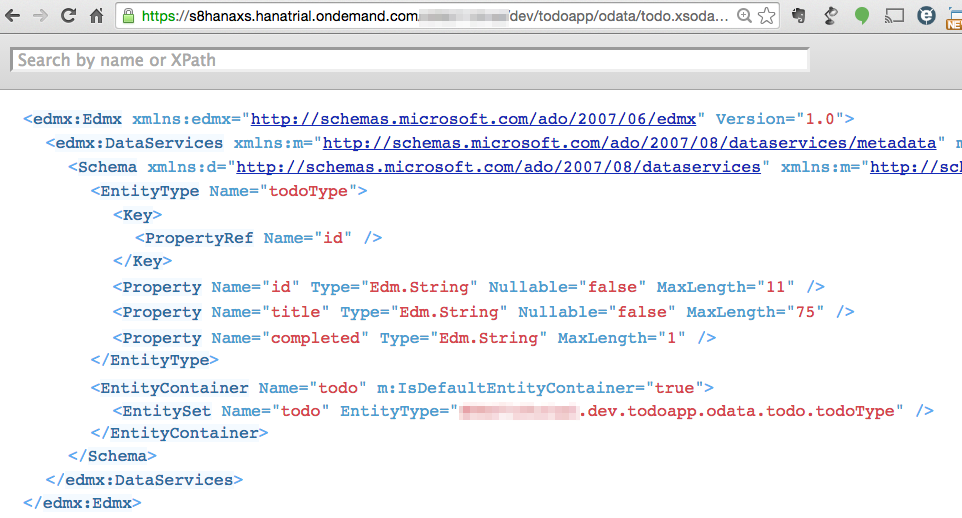

todo.hdbtable
table.schemaName = "YOUR_ NEO_SHEMA";
table.tableType = COLUMNSTORE;
table.description = "Todo App";
table.columns = [
{name = "id"; sqlType = NVARCHAR;
nullable = false; length=11;},
{name = "title"; sqlType = NVARCHAR;
nullable = false; length=75;},
{name = "completed"; sqlType = NVARCHAR; length=1;}
];
table.primaryKey.pkcolumns = ["id"];
Hint: Yes, CDS views are also possible (.hdbdd)
todo.xsodata
service {
"mytrialaccount.dev.todoapp.data::todo" as "todo";
}
Hint: restrictions (no DELETE) or procedures for CRUD operations are also possible
$metadata.xml

Develop app with SAP Web IDE
host SAPUI5 app on HCP as HTML5 app
access HANA XS backend via destination service
Problem:
SAP HANA Trial instance is only capable of SAML authentication
Don't be fooled by the HANA XS 'Hello-World Example'!
.xsaccess file:
{"exposed" : true ,"authentication" : [{"method" : "Basic"}]}
Prototyping: SAP Web IDE (SAPUI5 MockServer)
Develop: SAP HANA Web-Based Workbench
Host as HANA XS app
Blog post and a node.js SAML proxy solution
No lifecycle managment for HANA XS apps
No git support
Poor SAPUI5 support
Outdated SAPUI5 version
OData V2 model does not work
no app descriptor (manifest.json)
Replace:
src="/sap/ui5/1/resources/sap-ui-core.js"
data-sap-ui-libs="sap.ui.commons,....."
data-sap-ui-theme="sap_goldreflection">
With:
src="https://openui5.hana.ondemand.com/resources/sap-ui-core.js"
data-sap-ui-libs="sap.m"
data-sap-ui-theme="sap_bluecrystal"
data-sap-ui-bindingSyntax="complex"
data-sap-ui-compatVersion="edge"
data-sap-ui-preload="async"
data-sap-ui-resourceroots='{"todoapp": "./webapp"}'>
OData V2 model default
batch setting is true
Example: when changing a todo
2015-12-11 23:52:51 The following problem occurred: HTTP request failed405,Method Not Allowed,{ "error": { "code": "", "message": { "lang": "en-US", "value": "Invalid HTTP method. Only GET, POST, PUT, DEL methods are allowed."}}}
set useBatch = false
manifest.json
"sap.ui" : { ...
"models": {
"": {
"dataSource": "mainService",
"settings": {
"useBatch" : false
}
}, ...
Alternative
Component.js
var sServiceUrl = "./odata/todo.xsodata";
this.oDataModel = new ODataModel(sServiceUrl);
// useBatch false is important for SP08 XS!
this.oDataModel.setUseBatch(false);
Two-Way-Binding + submitChanges + batch=false
Success / Error handlers are NOT CALLED
// the operations (f.e. UPDATE) are triggerd and executed
// but you don't know if they succeeded or not!
// this.fnSuccess or
// this.fnError will never be called!!!
this.oModel.submitChanges({
success: jQuery.proxy(this.fnSuccess, this),
error: jQuery.proxy(this.fnError, this)
});
Don't use Two-Way-Binding + submitChanges
Do it with oModel.update
onChangeTodo: function(oEvent) {
var oInput = oEvent.getSource();
var sBindingPath = oInput.getBindingContext().getPath();
var sNewValue = oEvent.getParameters().newValue;
var oSendData = {
title : sNewValue
};
this.oModel.update(sBindingPath, oSendData, {
merge: true,
success: jQuery.proxy(this.fnSuccess, this),
error: jQuery.proxy(this.fnError, this)
});
}
Maybe this would work:
oModel.attachRequestCompleted(....);
oModel.attachRequestFailed(.....);
No Boolean Type in HANA XS SP08
SAPUI5 checkbox is Boolean
App.view.xml
CustomListItem selected="{= ${completed} === 'X' ? true : false }"
App.contorller.js
onToggleCompleted: function(oEvent) {
var oSelected = oEvent.getParameter("listItem");
var sBindingPath = oSelected.getBindingContext().getPath();
// CASTING
var bSelected = oEvent.getParameters().selected;
var sSelected = bSelected ? "X" : "";
var oSendData = { completed : sSelected };
this.oModel.update(sBindingPath, oSendData, { ...
Sake of simplicity: ID created on client-side;
possiblity to use .hdbsequence & procedure for CREATE
Investigate in sap.ui.model.message.MessageModel for message handling
some drawbacks
few "not-so-obvious" pitfalls
fully functional SAPUI5 app with backend
simple and fast creation of CRUD service
perfect for small private projects/PoCs
no strings attached - trial = FREE
development in the cloud - in your browser